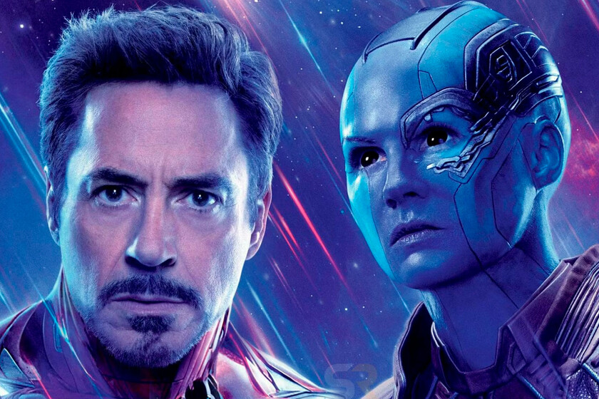
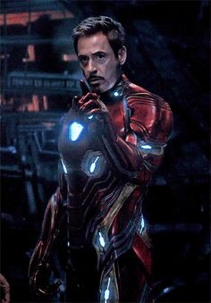
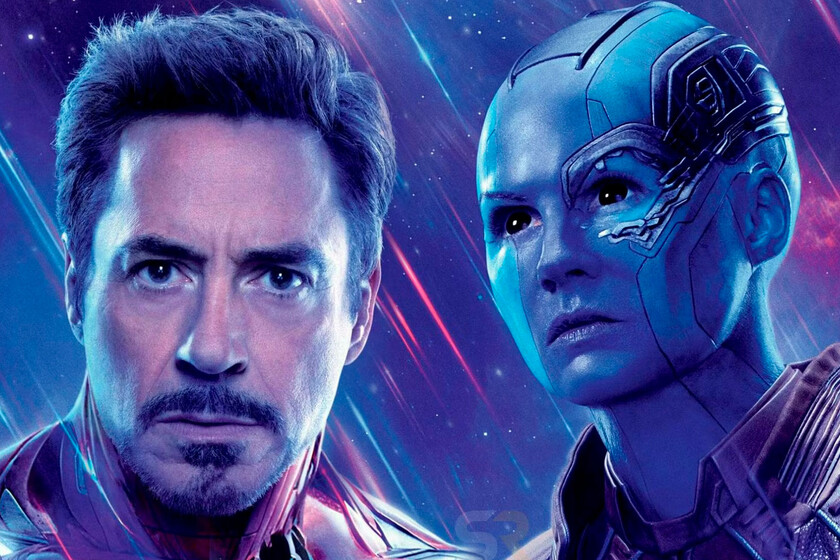
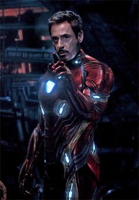

TONY STARK
Tony Stark fue herido de muerte en una zona de guerra en Afganistán poco antes de ser secuestrado por terroristas. Stark construyó un traje blindado para escapar del cautiverio, que a la vez sirvió como un dispositivo para mantener su corazón latiendo manteniéndolo con vida. Una vez que regresó a los Estados Unidos, Stark se reinventó a sí mismo como el superhéroe Iron Man con armadura. Lo cierto es Yo soy iron Man


 


